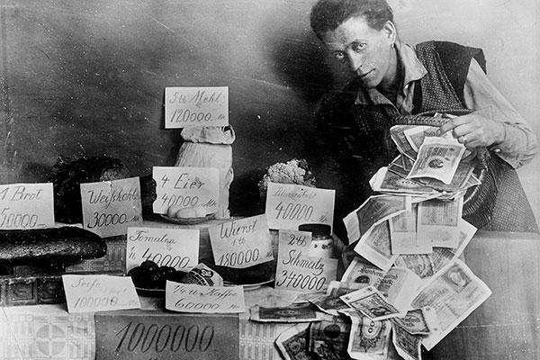

Международное событие
Документ, оформивший итоги Первой мировой войны, был подписан 28 июня 1919 г. во Франции, в Версале. Его условия после длительных секретных совещаний были выработаны в рамках Парижской мирной конференции 1919-20 гг. (Россия не была приглашена). Со стороны победителей договор подписали США, Великобритания, Франция, Италия, Япония и еще 22 государства, воевавших или поддерживавших союзников в войне против Германии, со стороны побежденных - Германия (отношения с союзниками Германии были урегулированы позже). 10 января 1920 г. Версальский договор вступил в силу.
Договор был подписан в Зеркальном зале Версальского дворца во Франции, символично связывая его с окончанием Франко-Прусской войны в 1871 году, когда Германская империя была провозглашена в том же зале. Главные решения принимали четыре страны: США, Великобритания, Франция и Италия. Россия, несмотря на свой вклад в войну, не была приглашена из-за Октябрьской революции и последующей гражданской войны. После четырех лет кровопролитной войны, которая унесла миллионы жизней, мир был готов к переменам. Версальский договор был частью серии мирных соглашений, известных как Парижская мирная конференция, которая проходила в 1919 году.
Договор наложил серьезные ограничения на вооруженные силы Германии. Армия была сокращена до 100 тысяч человек, и создание танков, подводных лодок или авиации было запрещено. Германия обязалась выплатить значительные репарации странам-победительницам. Это привело к тяжелым экономическим последствиям и во многом способствовало возникновению нацистской идеологии в Германии. Договор привел к созданию Лиги Наций, международной организации, целью которой было предотвращение будущих войн. Однако без участия США Лига Наций не смогла эффективно выполнять свои функции, что стало одной из причин Второй мировой войны.
Внутригерманское событие
Гиперинфляция 1923 года в Германии стала одним из самых разрушительных экономических кризисов в истории страны. Ее корни уходят в Первую мировую войну, когда Германия финансировала военные расходы за счет кредитов, а не налогов. После войны, в соответствии с Версальским договором, Германия обязалась выплатить огромные репарации, что усилило финансовое давление.
К 1923 году ситуация стала критической. Германия, испытывая экономические трудности, пыталась оплачивать репарации, что вынудило правительство печатать огромное количество денег. В итоге бумажная марка стремительно обесценилась. Инфляция росла в геометрической прогрессии, и цены удваивались каждый день.
В условиях гиперинфляции повседневная жизнь стала хаотичной. Люди получали зарплату в миллиардах марок, но покупательная способность была ничтожной. Деньги теряли ценность настолько быстро, что их сжигали для отопления или использовали как обои. В этих условиях немецкая экономика и общество были на грани краха, что привело к политической нестабильности и послужило одним из факторов, которые позже способствовали росту нацизма.
Личное событие
Каждый день просыпаюсь, и передо мной стоит новая гонка с инфляцией. Зарплату платят в миллиардах марок, но к вечеру эти деньги могут купить только буханку хлеба. Сразу же после получения денег я бегу в магазин, чтобы купить хоть что-то, прежде чем цены взлетят ещё выше. Очереди там длинные, как в дни дефицита, а люди вокруг такие же уставшие и измученные, как и я. Иногда кажется, что нет никакой надежды. Когда видишь, как деньги теряют свою ценность с каждой минутой, понимаешь, что стабильность ушла из жизни. Наша экономика - как разорванная нить, которая вот-вот порвётся. Соседи начинают говорить о старых добрых временах, когда марка имела смысл. Теперь же мы греем дома бумажными деньгами, потому что дрова дороже. Постоянная тревога и страх за будущее стали моими постоянными спутниками. Не знаю, как долго смогу выдержать этот хаос. Каждый день - борьба за выживание, и никто не может сказать, когда всё это закончится.
Иногда кажется, что нет никакой надежды. Когда видишь, как деньги теряют свою ценность с каждой минутой, понимаешь, что стабильность ушла из жизни. Наша экономика - как разорванная нить, которая вот-вот порвётся. Соседи начинают говорить о старых добрых временах, когда марка имела смысл. Теперь же мы греем дома бумажными деньгами, потому что дрова дороже.
Постоянная тревога и страх за будущее стали моими постоянными спутниками. Не знаю, как долго смогу выдержать этот хаос. Каждый день - борьба за выживание, и никто не может сказать, когда всё это закончится.